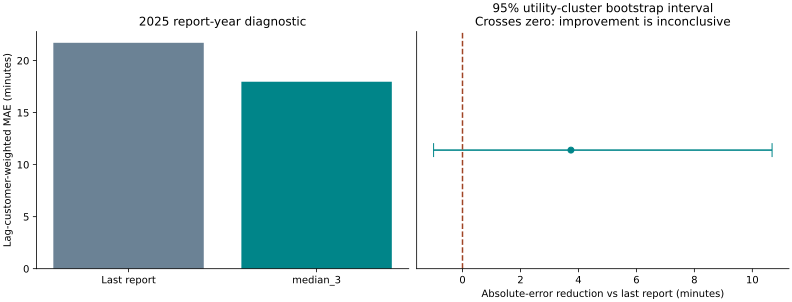
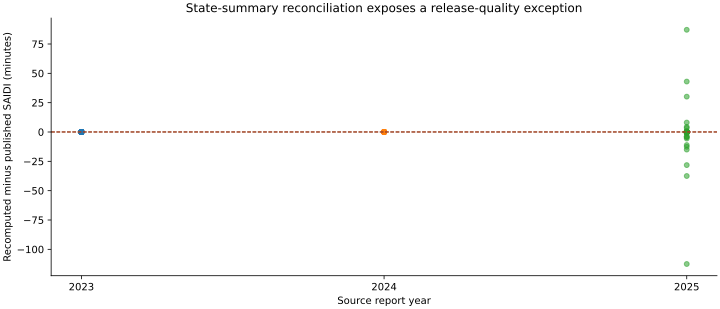

Decision status
Use the 2024 reconciled release for descriptive due diligence. Quarantine [2025] from decision inputs: 26 state summaries fail the configured 0.11-minute comparison. This is an unexplained discrepancy between source components, not evidence that utilities misreported or that EIA data are generally unreliable. No predictive component is promoted.
What is actually observed
Six official EIA reliability workbooks, 2020–2025, normalize to 11,552 method-specific records covering 1,010 utility-state keys. IEEE and Other standards are separate. 729 positive-customer, normal-day IEEE observations appear in the audited 2024 view. Every row retains workbook, sheet and row number. A blank method block is not interpreted as a zero outage or as proof of nonresponse.
Peer review design
Peer cohorts exclude every row from the same utility, including its other states. Cohorts use state/ownership when at least 15 other observations exist, otherwise ownership/size, ownership, then national fallback. These are descriptive size/ownership comparisons; terrain, hazard, density and asset condition are not controlled. A high percentile is a review signal, not evidence of poor management.
Predictive evaluation
2023 chooses among last report, three-report median and three peer-shrinkage weights; 2024 calibrates intervals; 2025 is held out for diagnostics. Selected model: median_3. Weighted MAE 17.97 vs baseline 21.71 minutes, using lagged customer weights. Utility-cluster bootstrap improvement interval [-1.00, 10.68] crosses zero; nominal 90% band coverage is 88.3%. The predictive gate therefore fails. Balanced six-year cohort results are reported separately to expose attrition sensitivity.
Timing and vintage limitation
Splits respect report years, not historical release timestamps. All files are final snapshots downloaded in October 2026; original historical release vintages were not reconstructed. Accordingly this is a next-report benchmark diagnostic, not proof of a deployable January-1 annual forecast or real-time nowcast. 2025 diagnostics remain exploratory because that release is quarantined from the decision view.
Investment screen
The workbench computes a break-even up-front social cost from observed customer exposure and user-entered reduction, customer-hour valuation, O&M, rate and life assumptions. No intervention effectiveness is estimated. The value is not utility profit, lost revenue, regulatory cost recovery or an engineering design. A positive conditional surplus only defines assumptions worth investigating; it does not justify an investment.
What to investigate next
First reconcile the 26 state-level source-component differences and determine whether revisions, scope or an extraction issue explain them. Then obtain engineering cost/effectiveness evidence and relevant weather, density and asset-condition covariates. Re-test predictive coverage and uncertainty with multiple independently held-out years and publication-date vintages. No source-provider contact or communication has been sent.
Personal understanding
I can distinguish a functioning model from a justified decision. Here the apparent forecasting improvement is uncertain, and a newer source release fails a consistency check. The defensible action is to retain the reconciled release, expose the issues and withhold predictive promotion. That judgment is more useful than adding complexity and presenting a confident but unsupported investment recommendation.
Sources
U.S. Energy Information Administration, Form EIA-861 detailed data: https://www.eia.gov/electricity/data/eia861/ . Official ZIP URLs, hashes, original reliability workbooks and exact row lineage are bundled. Government-source values are observed; scenario assumptions and modeled outputs are labeled separately.